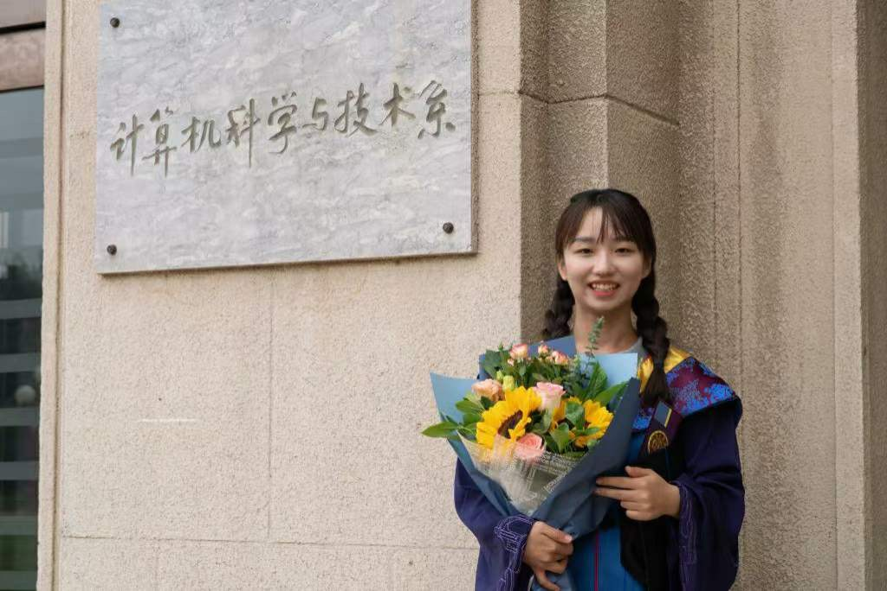

|  |
|
I am a forth-year PhD student at Mila - Québec AI Institute, University of Montreal. I am furtunate to be supervised by Prof. Bang Liu. Previously, I received M.Eng and B.Eng degrees in Computer Science from Tsinghua University in 2021 and from Tongji University in 2018, respectively.
I am dedicated to developing reliable LLM. My research covers multimodal large language models, neural symbolic reasoning and AI4Science.
CadVLM: Bridging Language and Vision in the Generation of Parametric CAD Sketches.
Sifan Wu, Amir Khasahmadi, Mor Katz, Pradeep Kumar Jayaraman, Yewen Pu, Karl Willis, Bang Liu.
ECCV 2024.
CAD-LLM: Large Language Model for CAD Generation.
Sifan Wu, Amir Khasahmadi, Mor Katz, Pradeep Kumar Jayaraman, Yewen Pu, Karl Willis, Bang Liu.
NeurIPS 2023 Workshop. [Paper]
Identify Event Causality with Knowledge and Analogy.
Sifan Wu, Ruihui Zhao, Yefeng Zheng, Jian Pei, Bang Liu .
AAAI 2023. [Paper]
Adversarial Sparse Transformer for Time Series Forecasting.
Sifan Wu, Xi Xiao, Qianggang Ding, Peilin Zhao, Ying Wei, Junzhou Huang.
NeurIPS 2020. [Paper]
Improving Clinical Note Generation from Complex Doctor-Patient Conversation.
Yizhan Li, Sifan Wu,Christopher Smith, Thomas Lo, Bang Liu.
PAKDD 2024. [Paper]
Knowledge Refinery: Learning from Decoupled Label.
Qianggang Ding, Sifan Wu, Tao Dai, Hao Sun, Jiadong Guo, Zhang-Hua Fu, Shutao Xia.
AAAI 2021. [Paper]
Hierarchical Multi-Scale Gaussian Transformer for Stock Movement Prediction.
Qianggang Ding *, Sifan Wu *, Hao Sun, Jiadong Guo, Jian Guo.
IJCAI 2020. [Paper]
ConvDroid: Lightweight Neural Network based Andoird Malware Detection.
Sifan Wu, Xi Xiao.
ICONIP 2019. [Paper]